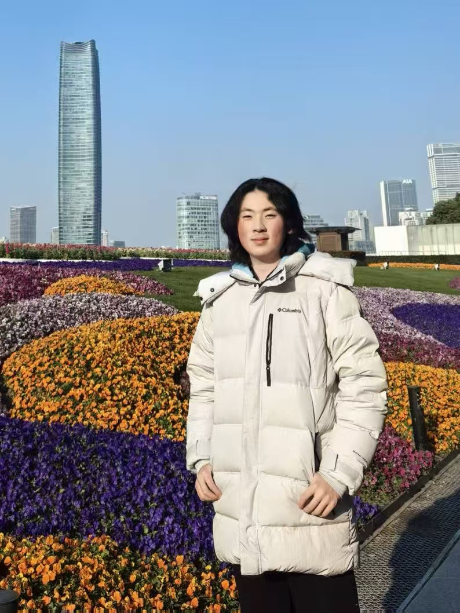

Undergraduate researcher in Artificial Intelligence at Fudan University and exchange student at UC San Diego (Fall 2026). At FudanNLP ALEX Lab, advised by Prof. Yixin Cao, I study reasoning processes, agent reliability, and mechanistic interpretability.
Kang Chen*, Junjie Nian*, Yixin Cao, Yugang Jiang. “Disagree to Explore, Agree to Commit: Routing-Guided Test-Time Scaling for Software Agents.” Preprint, 2026. [arXiv] [Code]
Kang Chen, Minshen Yu, Junjie Nian, Yaoning Wang, Yixin Cao, Yugang Jiang. “Does the Same Token Mean the Same State? MoE Routing as Signal for Reasoning Control.” Preprint, 2026. [arXiv] [Website]
Junjie Nian*, Kang Chen*, Ge Zhang, Yixin Cao, Yugang Jiang. “TraceGraph: Shared Decision Landscapes for Diagnosing and Improving Agent Trajectories.” Preprint, 2026. [arXiv] [Code] [Trajectory Lens]
Kang Chen*, Junjie Nian*, Yixin Cao, Yugang Jiang. “SliceGraph: Mapping Process Isomers in Multi-Run Chain-of-Thought Reasoning.” Preprint, 2026. [arXiv] [Code]
Kang Chen*, Zhuoka Feng*, Sihan Zhao, Kai Xiong, Junjie Nian, Yaoning Wang, Changyi Xiao, Yixin Cao. “NEX: Neuron Explore-Exploit Scoring for Label-Free Chain-of-Thought Selection and Model Ranking.” Preprint, 2026. [arXiv]
Kang Chen*, Fan Yu*, Junjie Nian, Sihan Zhao, Zhuoka Feng, Zijun Yao, Heng Wang, Minshen Yu, Yixin Cao. “Thinking Traps in Long Chain-of-Thought: A Measurable Study and Trap-Aware Adaptive Restart.” ACL 2026 Findings. [arXiv] [ACL Anthology]
Zhuoka Feng*, Kang Chen*, Sihan Zhao†, Kai Xiong†, Yaoning Wang†, Minshen Yu, Junjie Nian, Changyi Xiao, Yixin Cao, Yugang Jiang. “ARM: Role-Conditioned Neuron Transplantation for Training-Free Generalist LLM Agent Merging.” EMNLP 2026 Oral. [arXiv] [Website]
* Equal contribution † Equal second-author contribution